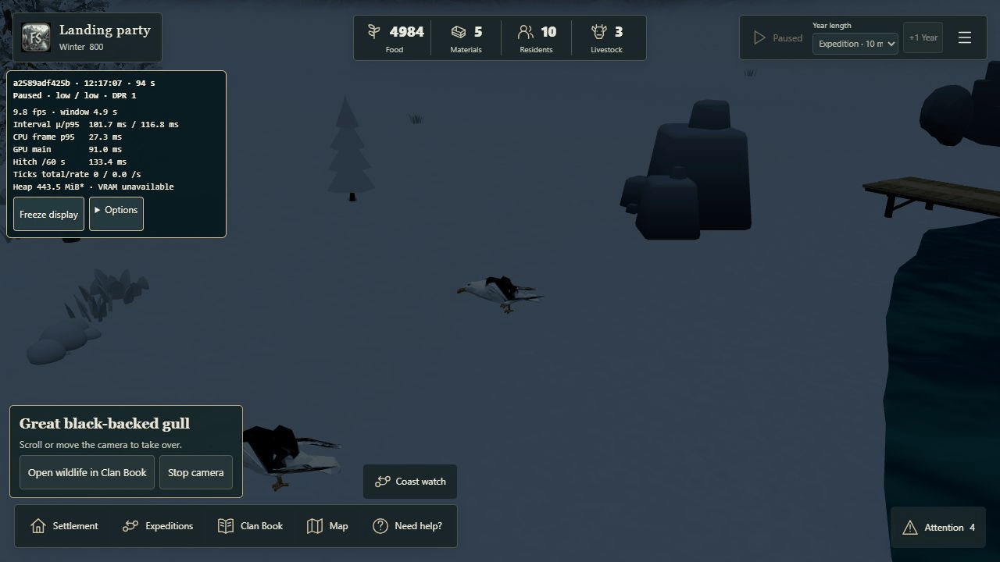
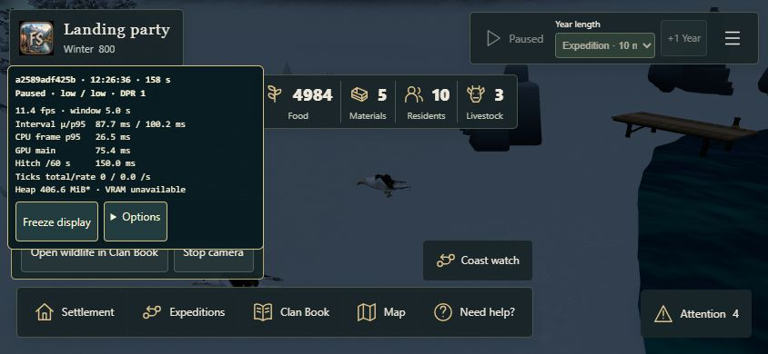

Wildlife sighting camera
A short camera orbit of the exact currently visible animal. Scroll, drag, pinch, use camera keys or press Escape to take over immediately. The current camera view stays in place.
- Export your campaign if needed. Download the genuine live-sighting checkpoint. Fully reload to the start menu, then choose Recover or import → Import campaign → Continue campaign. Use the start menu for both checkpoints.
- Keep the clock paused. Open Attention and click the actual gull sighting row. The Activity workspace should close and the camera should approach the real gull, then orbit.
- Try one scroll in/out, drag, pinch, camera key or Home. The first interaction should stop the orbit and work normally. There should be no return to the old view. The small caption retains Open wildlife in Clan Book.
- Reload the checkpoint for another attempt. Let one orbit end naturally. It should stop at its final view with ordinary camera control.
- Import the historical checkpoint and select its old sighting. When the exact animal is not in view, the factual Clan Book entry should open with a short notice. No substitute animal appears.
- Please also try iPhone/iPad landscape and reduced motion. Desktop emulation is not a physical-device approval.
QA setup uses explicit initial 5000 Food and quiet demography. Real paid expedition commands, the physical island, current animal population and recorded witnesses produce the sighting. There are no spawned or repositioned animals.
Recorded desktop review
Actual sampled browser capture at measured intervals. No generated frames or audio. This is not a device performance certification.

Phone landscape layout
